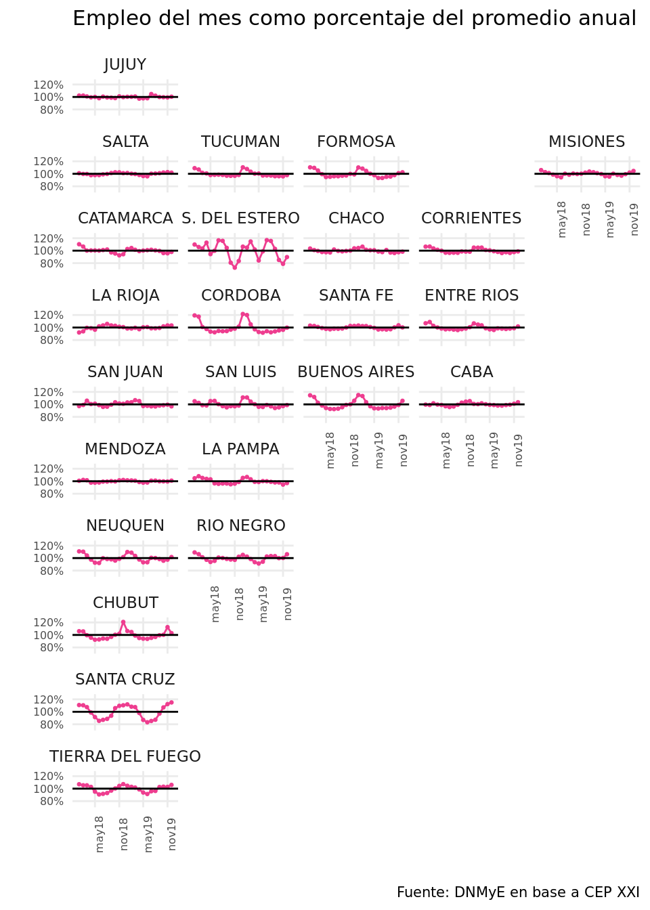

La Dirección Nacional de Mercados y Estadística (DNMyE) elaboró un informe que procura examinar las características de la estacionalidad turística en Argentina a partir de distintas mediciones y fuentes de información. Contiene un análisis en base a datos de la ocupación hotelera obtenidos de la Encuesta de Ocupación Hotelera (EOH) y una caracterización de la estacionalidad ampliada hacia la totalidad de los destinos del país con datos de empleo registrado publicados por el Centro de Estudios para la Producción (CEP XXI). Adicionalmente, se estudia la estacionalidad en aquellos departamentos o partidos con relevancia en términos de empleo turístico y a nivel provincial para observar las particularidades de cada jurisdicción.
La estacionalidad de la demanda constituye una característica inherente del sector turístico. El comportamiento estacional, para el caso de Argentina, es marcado en los primeros meses del año, con una recuperación en julio, mes de las vacaciones de invierno. Sin embargo, este fenómeno no es homogéneo entre destinos. Observando algunas de las 49 localidades relevadas por la EOH, puede verificarse que conviven destinos con actividad más estable a lo largo del año, como la Ciudad Autónoma de Buenos Aires (CABA), localidades con picos en verano, como Villa Gesell; otros en la temporada invernal, como el caso de Salta en julio; y, por último, casos, como el de San Martín de los Andes, con 2 temporadas altas en un mismo año.

Estacionalidad en la ocupación hotelera
Tomando como indicador de estacionalidad el porcentaje que representa el mes de mayor actividad –en este caso las pernoctaciones en hoteles y parahoteles- respecto respecto del promedio del año, se observa que destinos como Mar del Plata, Villa Gesell en la Costa Atlántica, Bariloche en la Patagonia y Salta en el Norte, tienen un mes donde las pernoctaciones superan en un 50% al promedio del año. En cambio, CABA muestra, en su mes de mayor actividad, menos de un 25% respecto de la media anual. En términos generales, las capitales de las provincias muestran una estacionalidad baja o media.

Estacionalidad en el empleo
Para tener una caracterización de la estacionalidad de la totalidad de los destinos del país, se tomaron los datos abiertos de empleo registrado por departamento/partido y sector de actividad, publicados por el Centro de Estudios para la Producción (CEP XXI) de la Secretaría de Industria y Desarrollo Productivo de la Nación, en base a información del Sistema Integrado Previsional Argentino (SIPA).
Una mirada a nivel nacional permite ver que, más allá de la tendencia decreciente desde 2018 y la recuperación de los últimos meses, se observa especialmente la estacionalidad en el empleo en Servicios de Alojamiento, con el nivel creciendo hasta alcanzar un máximo en el mes de enero y luego reduciéndose hasta un mínimo en junio. Sucede lo mismo con la gastronomía, si bien solo una parte de su producción es consumida por visitantes.

Tomando los departamentos o partidos con relevancia en términos de empleo turístico (aquellos que tienen 250 o más puestos o bien aquellos que representan el 5% o más del empleo en alojamiento de la provincia), podemos ver que los partidos de la costa bonaerense tienen una fuerte estacionalidad, al igual que Córdoba y el departamento de Río Hondo, en Santiago del Estero. En La Costa, el empleo de enero fue un 107% mayor al de la media del año.

Caracterización provincial
La caracterización de la estacionalidad, medida como el porcentaje del empleo registrado en un mes con respecto al promedio del año, puede realizarse también a nivel provincial, para observar las particularidades de cada una de ellas.

Tomando el mes con mayor cantidad de puestos de trabajo y su desvío respecto de la media, es posible observar que la mayoría de las provincias tienen su pico en enero, febrero y diciembre. Córdoba, por ejemplo, tuvo un 20,5% más de empleo en enero con respecto al promedio del año. Mendoza es el ejemplo opuesto: el mes con mayor empleo (febrero) es solamente un 1,7% más que el promedio del año.
| Puestos en alojamiento por provincia | ||||
|---|---|---|---|---|
| Mes con mayor desvío de la media del año (promedio 2018-2019) | ||||
| Mes | Puestos | Promedio anual | Puestos/Promedio (%) | |
| Cordoba | enero | 5.958 | 4.943 | 120,5% |
| Santiago Del Estero | julio | 1.580 | 1.354 | 116,7% |
| Buenos Aires | enero | 25.958 | 22.625 | 114,7% |
| Santa Cruz | diciembre | 1.570 | 1.393 | 112,7% |
| Chubut | diciembre | 1.480 | 1.323 | 111,9% |
| Formosa | enero | 252 | 229 | 110,3% |
| Neuquen | enero | 2.430 | 2.204 | 110,3% |
| Tucuman | enero | 1.336 | 1.218 | 109,7% |
| San Luis | enero | 872 | 807 | 108,0% |
| La Pampa | febrero | 436 | 406 | 107,4% |
| Rio Negro | enero | 4.368 | 4.079 | 107,1% |
| Entre Rios | febrero | 1.912 | 1.791 | 106,8% |
| Catamarca | enero | 353 | 331 | 106,6% |
| Tierra Del Fuego | diciembre | 1.001 | 939 | 106,6% |
| San Juan | marzo | 638 | 600 | 106,3% |
| Corrientes | febrero | 1.144 | 1.082 | 105,7% |
| Misiones | enero | 3.131 | 2.988 | 104,8% |
| CABA | diciembre | 8.476 | 8.124 | 104,3% |
| Chaco | enero | 589 | 567 | 103,8% |
| Santa Fe | enero | 2.745 | 2.662 | 103,1% |
| Jujuy | julio | 620 | 605 | 102,6% |
| Salta | noviembre | 2.266 | 2.209 | 102,5% |
| La Rioja | octubre | 350 | 342 | 102,3% |
| Mendoza | febrero | 5.172 | 5.085 | 101,7% |
| Fuente: DNMyE en base a CEP XXI | ||||
El informe además incluye una descripción de los principales resultados obtenidos para cada provincia en términos de empleo turístico y estacionalidad. En cada una de ellas se seleccionó un conjunto de departamentos que albergan localidades de interés turístico, contemplando tanto destinos consolidados como emergentes o en desarrollo.
El documento forma parte de la serie de Documentos de Trabajo de la DNMyE, disponibles en https://biblioteca.yvera.tur.ar/.
Se puede acceder al documento en el siguiente link